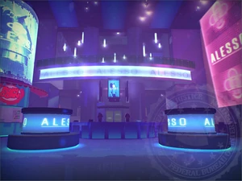

Le lieu
Le Gensec Arena est un stade possédé par l'entreprise de sécurité GenSec qui se situe a washington D.C
bien qu'il soit utilisé principalement a hébérger de gros évènement comme des concert, il sert aussi a exposer les produit de GenSec notamment
des coffres-forts qui sont dis "impénétrable"

L'incident rattaché a ce lieu
Dans la nuit du 21 mai 2015 durant le concert du disque jockey suédois Alesso, le PayDay Gang© s'infiltra dans le stade dans le but de voler le contenu des coffres-fort qui sont dis "impénétrable"
ainsi apres avoir récupérer des C4 caché par un complice, ils fient exploser le sol en dessous des coffres-forts en profitant de la musique du concert pour etre discret avant de pouvoir percer le dessous des coffres, ainsi prouvant que les coffres-fort n'etait pas "impénétrable"
le tout avant de quitter le stade en s'étant mêler a la foule qui quitte le concert